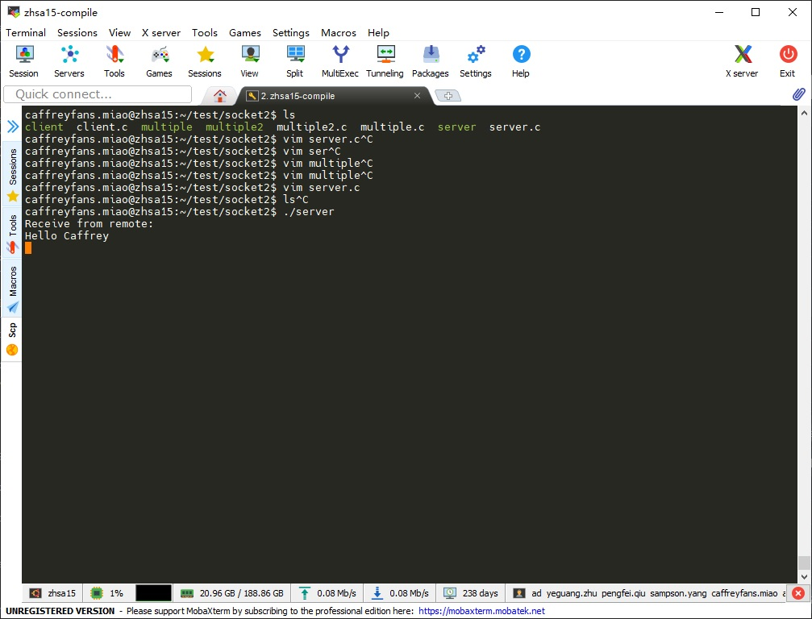

Linux 网络编程下端口调用问题¶
自己写的一个 demo 程序遇到一个奇怪的问题是关于端口占用问题的，先看下源码。
#include <stdio.h>
#include <stdlib.h>
#include <unistd.h>
#include <netdb.h>
#include <netinet/in.h>
#include <string.h>
int main(int argc, char *argv[]) {
int listenfd, connfd;
char buffer[256];
struct sockaddr_in serv_addr;
char *str = "Receive your message --- server";
/* First call to socket() function */
/* Create socket */
listenfd = socket(AF_INET, SOCK_STREAM, 0);
if (listenfd < 0) {
perror("ERROR opening socket");
exit(1);
}
/* Initialize socket structure */
bzero((char *)&serv_addr, sizeof(serv_addr));
serv_addr.sin_family = AF_INET;
serv_addr.sin_addr.s_addr = htonl(INADDR_ANY);
serv_addr.sin_port = htons(5010);
/* Now bind the host address using bind() call. */
if (bind(listenfd, (struct sockaddr *)&serv_addr, sizeof(serv_addr)) < 0 ) {
perror("ERROR on binding");
exit(1);
}
listen(listenfd, 5);
while (1) {
connfd = accept(listenfd, (struct sockaddr*)NULL, NULL);
bzero(buffer, sizeof(buffer));
int n = read(connfd, buffer, sizeof(buffer));
if (n > 0) {
printf("Receive from remote:\n%s\n", buffer);
}
write(connfd, str, strlen(str));
close(connfd);
}
return 0;
}
运行结果如下：
代码能成功运行并接收到数据，但是在程序退出后会报一个